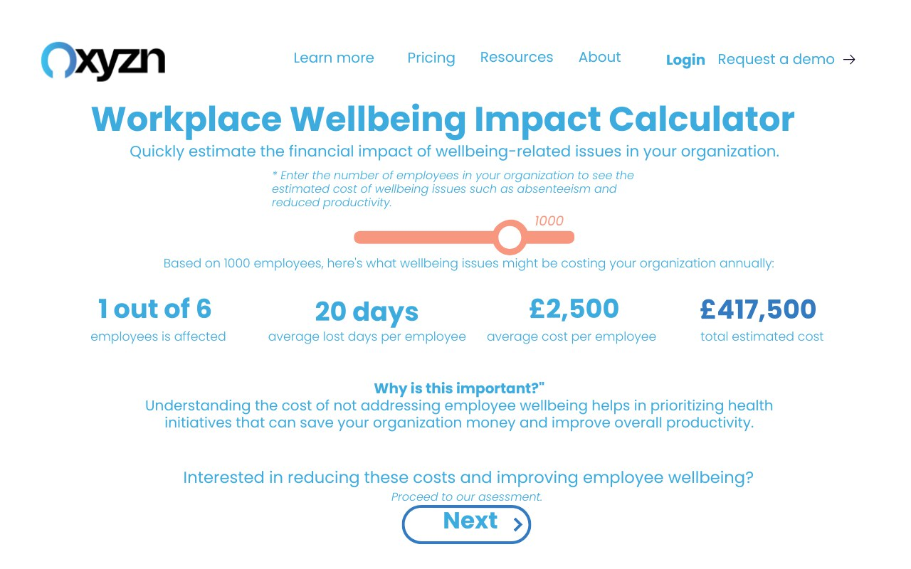
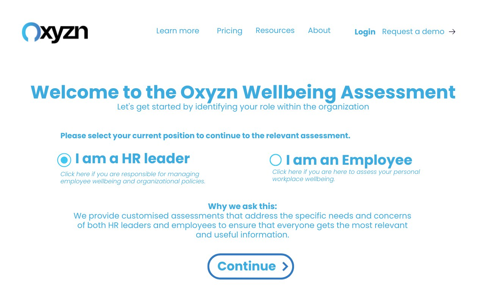
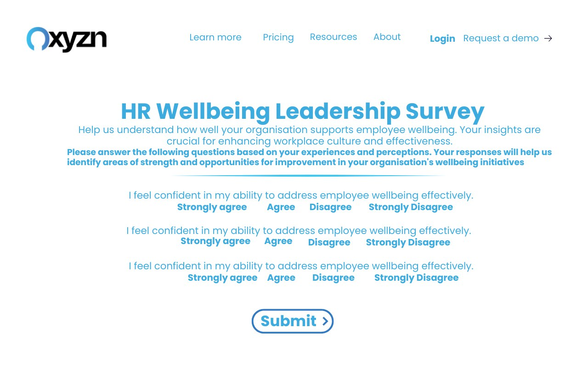

Next project
UK Housing Market & Intelligence

A Wellbeing Assessment Prototype · Oxyzn Internship
Oxyzn sells a wellbeing platform to HR leaders. The commercial problem is that wellbeing reads as a soft topic: nobody argues against it and nobody funds it urgently. I designed a diagnostic tool that puts a pound figure on inaction before it asks for anything.
A visitor enters their headcount on a slider and immediately sees an estimated annual cost. Only then does the tool ask them to complete an assessment. The number does the persuading, and the assessment qualifies the lead.
This was a concept prototype produced during a marketing and data internship at Oxyzn between March and June 2024. The screens shown are from the prototype; I have not represented it as a shipped product.
One input, three published constants, one number the reader cannot unsee.
The model is deliberately simple enough to explain in one line: one in six employees is affected, each affected employee takes around twenty days off a year, and the average cost per affected employee is £2,500. Headcount divided by six, multiplied by £2,500. At 1,000 employees that is an estimated £417,500 a year.
Simplicity was the point. A model with fifteen inputs is more defensible and converts worse, because the visitor abandons it. A model with one slider produces a number they can argue with, and arguing with it means they are engaged rather than gone.
The buyer and the end user need different questions and different proof.


The flow forks at the first screen. An HR leader is buying an organisational outcome, so they get the financial calculator, then a leadership survey, then an organisational report. An employee is assessing their own working life, so they get a personal metric tool, a personalised questionnaire and their own dashboard.
Splitting them up front was a commercial decision as much as a UX one. Sending an employee down a cost-of-absence path is irrelevant to them, and sending an HR director down a personal wellbeing path buries the argument that unlocks a budget.
Value first, question second, contact details last.
| Step | What the visitor gets | What the business gets |
|---|---|---|
| 1. Role selection | A relevant path | Segmentation before any data is asked for |
| 2. Impact calculator | A cost figure in seconds | A reason for the visitor to continue |
| 3. Assessment | A structured self-diagnosis | Qualification data on the account |
| 4. Report | Findings they can take to a board | A warm, self-qualified lead |
Most gated tools ask for an email before giving anything. This one inverts that: the calculator runs with no sign-up at all, because the number is the hook and withholding it wastes the only moment of genuine interest.
A calculator is an argument with a slider on it.
This project taught me that quantifying a problem is a marketing act, not just an analytical one. The three constants behind the calculator were the same kind of published research I had been editing into the white paper. Put in a paragraph they are interesting. Put behind a slider with the reader's own headcount in it, they become their problem.
It is the closest thing I have to a single artefact that explains what I do: the analysis decides what is true, and the design decides whether anybody acts on it.